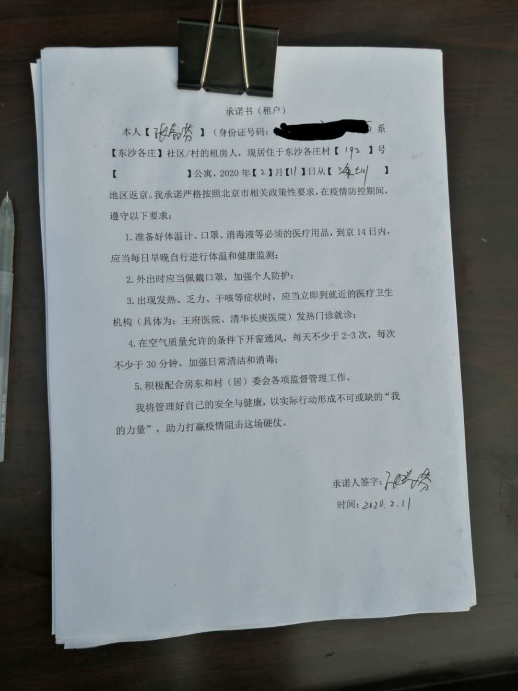

趁疫情发国难财？长租公寓开了个坏头
原文链接 备份链接 Original 老九论财经 三联生活周刊 三联生活周刊 About Feature 一本杂志和他倡导的生活。 Today 在全国人民对抗肺炎疫情的战役中，很多人都在想办法贡献绵薄之力，但是一些浑水摸鱼的行为也开始浮出 …
编者按 ▼∇▼∇▼∇
2019年开始，面向农民工子女的实务学堂，和面向女工的木兰花开，合作组织了一个女工写作班，参加的女工，有的是家政工，有的是厨师，有的是销售员。
最近，大家有的在北京，有的在老家，多多少少，也都受到了新冠肺炎疫情的影响。我们就提议，大家可不可以写写自己这段时间的经历，结果，收到了不少文章。
我们陆续发出来，欢迎大家来阅读，也欢迎大家打赏，打赏会转给作者。你们的鼓励非常重要。谢谢大家！

木兰姐妹在疫情之下的记录
作者：春分
自我介绍：我叫春分，来自江西，喜欢做手工和弹琴，是一个3岁多孩子的妈妈。
☟
我买好了2月10日的票，从深圳回北京。虽然买好了票，其实不知道能否顺利返京，一直挺忐忑的。
我住北七家东沙各庄，1月30日曾经封过村，返京人员需要在村外隔离14天。后来可能迫于舆论的压力，又可以回村了，但是现在也不知道具体情况，不知进村能否顺利。另外，有很多地方道路封了，客运停了，很多同事都没办法出来，因为各种原因退了票。我也怕路上有什么变故。
我也担心回来的路上感染上病毒。所以，我在选择交通工具上也费了一段时间，坐飞机？坐高铁？还是坐动卧？最后决定坐动卧，时间相对短，带着孩子也方便，睡一晚上就到了。
买完票之后，我就在网上看攻略，需要注意什么。我当时就决定，在火车上不吃不喝，也不上厕所，一上车就在卧铺上休息。
出发前一天，我想去药店买点酒精，去了3家药店，都没有。有一家有免洗洗手液，含有酒精，有消毒杀菌的作用，一小瓶就19.8元。药店服务员还问我：“要多买几瓶吗？”我最后决定买了一瓶。
本文作者提供的图片
我也提前跟房东做了沟通。因为回去后就要隔离，需要菜什么的，她可以帮忙买。感觉回去也不方便，就去超市买了一点香菇、木耳、辣椒酱等，带回北京。
一切都准备好了。
2月10日下午5点50分，吃完饭，我带着孩子，从家里出发，坐地铁去火车站。进地铁站安检的时候，测额温，检查书包里的液体。那瓶洗手液，工作人员还仔细看了一下成分才放行。一路上感觉人没那么多，都戴着口罩，也有个别还戴着护目镜、帽子和塑料雨衣，人与人之间好像刻意保持一段的距离，地铁的电视循环播放着预防新冠病毒的动画短片。
大概6点50分到达火车站，因为人比较少，进站相对之前还是快了很多。进站的时候同样测额温。到候车厅后，时间还早，感觉火车站的厕所应该相对安全一些，就去上了一下厕所，还仔细地用洗手液洗了手。
来到候车厅，有些检票口一直在放着“XX列车停运，请旅客退票”的信息。我那趟车是7点34开的，零星有几个人在候车，大家都隔着一段距离，我也有意保持一定的距离。到开始检票的时间，好像到北京的检票口会单独围出来一个区域，检查身份证，应该是看有没有湖北的乘客，检查完后才能刷身份证进站。
上火车后，来到我所在的2车11号。看了一下一个房间就4个铺，相对于普通的硬卧，还是舒适很多。后来，又来了一个旅客。这个房间就我们三个人。把东西放下后，她就说：“我看那边都没什么人，要是没人，我就去问一下工作人员，看能去那边住吗。”
就简单闲聊了几句，就各自戴着口罩，做自己的事情。我的儿子呦呦老想跟这位阿姨互动，但明显人家不想，我也想呦呦安静一下，就跟呦呦说了，呦呦还发了点小脾气。火车工作人员来登记车票信息，还发了旅客信息表，下车后投放到出站口的盒子里。后来也问了车站工作人员，是不让去那边车厢的。
呦呦应该是累了，挺早也就睡觉了，怕他睡不好，就给他摘了口罩。要是戴着口罩睡觉确实是挺不舒服的。我后来就换了一个一次性的口罩睡觉，相对舒服一下。但也没办法一直戴着口罩，半夜摘了透了会儿气，因为怕影响到其他人，还是尽量戴着口罩睡觉。我看旁边旅客就一直戴着口罩。整节车厢都没有看到人员走动，只是保洁员来收了2次垃圾，售卖盒饭、零食的小车都没有。
我一路上也只是半夜带呦呦去上了个厕所，一直都没有离开卧铺。下车前，工作人员还测了一次体温。人很少，我们也悠哉悠哉地来到出站口。出站口需要填信息，上面零星的放着几支笔，有人用纸把笔包住写，我也拿出一张纸巾把笔包住填写了信息，投放到出站口的箱子里。
一出站，就有人问我坐出租车吗，问我到哪儿。我说坐地铁，他就说：“疫情这么严重，还带着孩子坐公交，不怕感染吗？”他这样说，我就更决定坐地铁了。以前出站人特别多，跟着人流就能找到地铁站，这次居然还费了些功夫才找到地铁口。人太少，都有点不太习惯了，但很快就刷卡进站了。进地铁站倒是没有人来测温，估计有什么红外测温仪吧，我倒是没有看见。
一路上人不算太多，但座位上基本上都有人，而且都戴着口罩，大家都盯着自己的手机，基本上没什么交流。地铁电视上在循环播放着宣传片，首都的宣传片和深圳的感觉不一样。首都毕竟是政治中心，除了怎么预防病毒的宣传片外，其他都是公安、医生为了使命怎么奔赴前线。还是深圳地铁的更轻松一些，都是卡通预防病毒的宣传片。一路上都看着，很快就到地铁天通苑北。
下地铁后，还是有人在出口，问我去哪儿，当时有想坐出租车回去，也怕公交车不开。但最后还是决定坐537回去。公交站台留了个进口，有一个红外测温仪测量温度，进去的时候还担心温度高。以前坐537都要排一条长龙，这次过去就一个人，排队的玻璃门都关着，还要自己把门拉开。最后只有4个人上车，偌大的双层巴士就我们几个人显得有点空旷。一路上还跟房东联系，告诉她我几点到，如果进不去，看房东要不要接，怕门口要填什么信息，还特意跟丽霞问了房东的名字。
很快就到了东沙，到大门口我还有点忐忑，怕进不去。门口摆了2个大长桌，零星有几个人往外走，有个货车正好进去，司机也下车填写资料。我到门口，就有工作人员让我填写表格，就是姓名，身份证，家庭住址，出发地，联系电话什么的，还签了一份承诺书。工作人员态度还挺好的，看我带着孩子，房东的电话没让我填，测了手腕温度后，就放我进去了。
东沙街道上没有几个人，就跟过年那几天一样，都有点不习惯。只有几家菜店和超市开门，其他店面都没有开。我回家后，收拾了一下，准备了一些生活用品，就要开始隔离了。

本文作者提供的图片
编辑：欧阳艳琴
制版：林楚虹
“女工故事写作坊”其他作品：

2018年3月创立于北京昌平，
是一个面向农民工子女的
全日制、非学历职业教育公益项目。
使命和愿景是：
探索打工子弟职业发展新路径，
为好的社会培养“珍贵的普通人”。
招收17岁以上农民工子女
报名咨询：ouzhou1283（欧阳）
捐赠支持请点击底部“阅读原文”
科蚪实务学堂
长按二维码向我转账
受苹果公司新规定影响，微信 iOS 版的赞赏功能被关闭，可通过二维码转账支持公众号。
原文链接 备份链接 Original 老九论财经 三联生活周刊 三联生活周刊 About Feature 一本杂志和他倡导的生活。 Today 在全国人民对抗肺炎疫情的战役中，很多人都在想办法贡献绵薄之力，但是一些浑水摸鱼的行为也开始浮出 …
原文链接 备份链接 作者 | 李伟 江晓川 许文苗 编辑 | 杨颢 出品 | 棱镜·腾讯小满工作室 欢迎下载腾讯新闻APP，阅读更多优质资讯 从私人关系到平日工作，这些人多和武汉没太多直接关系。和你我一样，他们是通过手机、电视关注着这个叫 …
原文链接 备份链接 *************▲************* （武汉红十字会官网截图/图） 全文共*3412*字，阅读大约需要7分钟。 “在物资发放这块，不会说我们想给谁就给谁，所有的分配由卫健委和防控指挥部来决定。” …
原文链接 备份链接 - 疫 情 之 下 - 我想，政府的人年都不过了，全国人民齐心协力，要治老天爷的“感冒病”。街上的人群应该过不了多久很快又要熙熙攘攘了吧。 ” 这天是2020年1月26日，庚子年的正月初二。 我站在郑州大学中路与汝河路 …
原文链接 备份链接 29.01.2020本文字数：1469，阅读时长大约2.5分钟 导读：非武汉地区确诊新型肺炎病例已经达到1649例，占湖北全省确诊病例比重近半（约46%），占全国比重达28%。 作者 | 第一财经 项真 湖北省新型肺 …